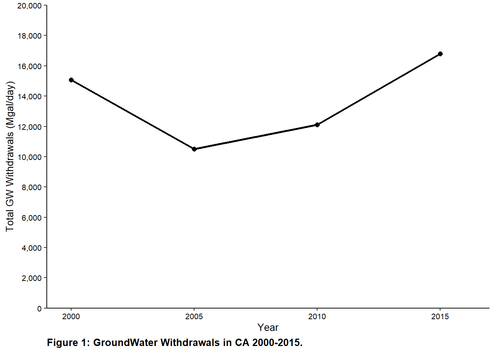
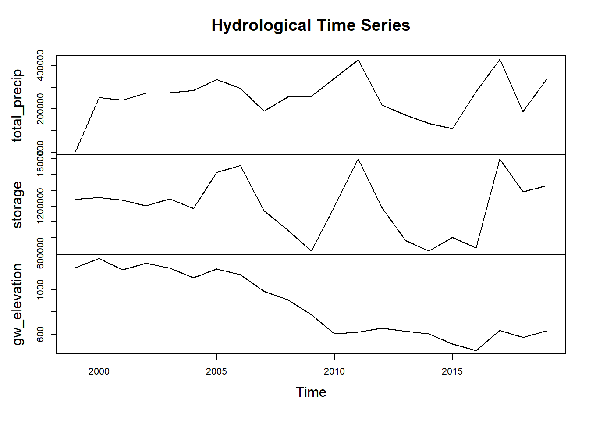
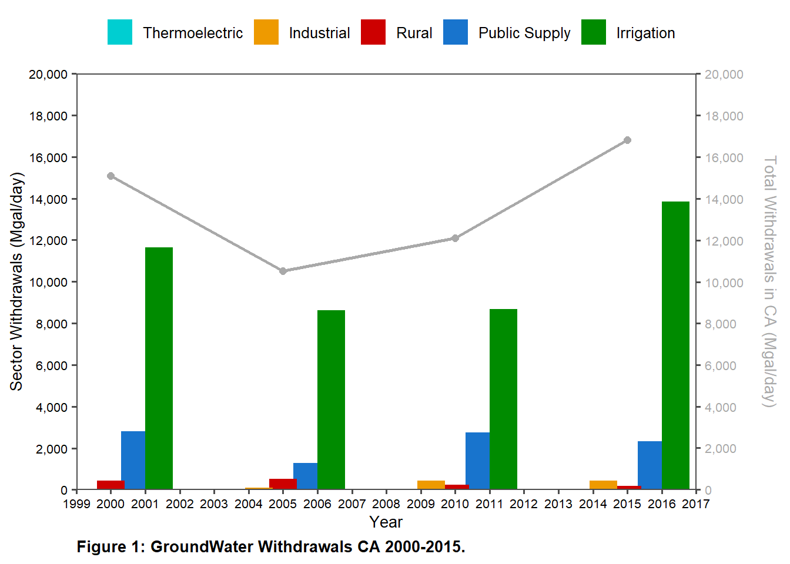

Statistical analysis on how snow and precipitation levels effect reservoir storage and groundwater levels and comparing them to groundwater withdrawals by demand sector in California (1999-2019)
Due to climate change, the state of California is more susceptible to longer periods of drought, ultimately affecting the states overall water supply.1 Aside from surface water, California heavily depends on its reservoir storage and groundwater supply to provide water to its ~40 million residents. Due to prolong drought, average snow and rainfall is not highly reliable every year. Since 2000, California has experience two in 2007-2009 and with the longest drought period being from 2011-2017. In this statistical analysis, we will examine how precipitation (snow and rainfall) are affecting reservoir storage and groundwater levels from 1999-2019.
Data
Snow/Rainfall Data
For this statistical analysis, I’ve obtained “Water Year” data from UC Berkeley’s Central Sierra Snow-lab2. This data set contains snow and rainfall data for water years 1971-2019 in a CSV format.
View Code
#Read in water year data#Read in the Water Year 2000 Datawy_2000 <-read_csv(here(datadir, "water_year_data", "Whole_WY_2000.csv" ), na =c("T", "NA", "--")) %>%clean_names() %>%replace(is.na(.), 0) %>%select(!remarks)#Read in the Water Year 2001 Datawy_2001 <-read_csv(here(datadir, "water_year_data", "Whole_WY_2001.csv"), na =c("T", "NA", "--")) %>%clean_names() %>%transform(new_snow_cm =as.numeric(new_snow_cm)) %>%replace(is.na(.), 0) %>%select(!remarks)#Read in the Water Year 2002 Datawy_2002 <-read_csv(here(datadir, "water_year_data", "Whole_WY_2002.csv"), na =c("T", "NA", "--"))%>%clean_names() %>%select(!remarks) %>%replace(is.na(.), 0) #Read in the Water Year 2003 Datawy_2003 <-read_csv(here(datadir, "water_year_data", "Whole_WY_2003.csv"), na =c("T", "NA", "--")) %>%clean_names() %>%select(!remarks) %>%replace(is.na(.), 0)#Read in the Water Year 2004 Datawy_2004 <-read_csv(here(datadir, "water_year_data", "Whole_WY_2004.csv"), na =c("T", "NA", "--")) %>%clean_names() %>%select(!remarks) %>%replace(is.na(.), 0) #Read in the Water Year 2005 Datawy_2005 <-read_csv(here(datadir, "water_year_data", "Whole_WY_2005.csv"), na =c("T", "NA", "--")) %>%clean_names() %>%select(!remarks) %>%replace(is.na(.), 0)#Read in the Water Year 2006 Datawy_2006 <-read_csv(here(datadir,"water_year_data", "Whole_WY_2006.csv"), na =c("T", "NA", "--")) %>%clean_names() %>%select(!remarks) %>%replace(is.na(.), 0) #Read in the Water Year 2007 Datawy_2007 <-read_csv(here(datadir, "water_year_data", "Whole_WY_2007.csv"), na =c("T", "NA", "--")) %>%clean_names() %>%select(!remarks) %>%replace(is.na(.), 0) #Read in the Water Year 2008 Datawy_2008 <-read_csv(here(datadir, "water_year_data", "Whole_WY_2008.csv"), na =c("T", "NA", "--")) %>%clean_names() %>%select(!remarks) %>%replace(is.na(.), 0)#Read in the Water Year 2009 Datawy_2009 <-read_csv(here(datadir, "water_year_data", "Whole_WY_2009.csv"), na =c("T", "NA", "--")) %>%clean_names() %>%select(!remarks) %>%replace(is.na(.), 0) #Read in the Water Year 2010 Datawy_2010 <-read_csv(here(datadir, "water_year_data", "Whole_WY_2010.csv"), na =c("T", "NA", "--")) %>%clean_names() %>%select(!remarks) %>%replace(is.na(.), 0) #Read in the Water Year 2011 Datawy_2011 <-read_csv(here(datadir, "water_year_data", "Whole_WY_2011.csv"), na =c("T", "NA", "--")) %>%clean_names() %>%select(!remarks) %>%replace(is.na(.), 0) #Read in the Water Year 2012 Datawy_2012 <-read_csv(here(datadir, "water_year_data", "Whole_WY_2012.csv"), na =c("T", "NA", "--")) %>%clean_names() %>%select(!remarks) %>%replace(is.na(.), 0) #Read in the Water Year 2013 Datawy_2013 <-read_csv(here(datadir, "water_year_data", "Whole_WY_2013.csv"), na =c("T", "NA", "--")) %>%clean_names() %>%select(!remarks) %>%replace(is.na(.), 0) #Read in the Water Year 2014 Datawy_2014 <-read_csv(here(datadir, "water_year_data", "Whole_WY_2014.csv"), na =c("T", "NA", "--")) %>%clean_names() %>%select(!remarks) %>%replace(is.na(.), 0) #Read in the Water Year 2015 Datawy_2015 <-read_csv(here(datadir, "water_year_data", "Whole_WY_2015.csv"), na =c("T", "NA", "--")) %>%clean_names() %>%select(!remarks) %>%replace(is.na(.), 0) #Read in the Water Year 2016 Datawy_2016 <-read_csv(here(datadir, "water_year_data", "Whole_WY_2016.csv"), na =c("T", "NA", "--")) %>%clean_names() %>%select(!remarks) %>%replace(is.na(.), 0)#Read in the Water Year 2017 Datawy_2017 <-read_csv(here(datadir, "water_year_data", "Whole_WY_2017.csv"), na =c("T", "NA", "--")) %>%clean_names() %>%select(!remarks) %>%replace(is.na(.), 0)#Read in the Water Year 2018 Datawy_2018 <-read_csv(here(datadir, "water_year_data", "Whole_WY_2018.csv"), na =c("T", "NA", "--")) %>%clean_names() %>%select(!remarks) %>%replace(is.na(.), 0) #Read in the Water Year 2019 Datawy_2019 <-read_csv(here(datadir, "water_year_data", "Whole_WY_2019.csv"), na =c("T", "NA", "--")) %>%clean_names()%>%select(!remarks) %>%replace(is.na(.), 0)
Reservoir Data
Additionally, for this analysis, I’ve obtained reservoir elevation and storage data from CA Department of Natural Resources & CA Department of Water Resources3. This data set provides daily reservoir elevation and storage data from 1981-2022. One limitation to this data set is that it only provide data on reservoirs part of the State Water Project, therefore my focus will be based on the San Luis Reservoir near Los Banos, California.
Moreover, for this analysis, I’ve obtained groundwater measurement data from CA Department of Natural Resources & CA Department of Water Resources4. This data set contains historical daily groundwater measurements for aquifers throughout all of California.
View Code
#Read in groundwater measurement and stations datagw_measurements <-read_csv(here(datadir, "gw_measurements", "measurements.csv")) stations <-read_csv(here(datadir, "gw_measurements", "stations.csv")) %>%select(site_code, county_name)gw_levels <-right_join(gw_measurements, stations, by ="site_code") %>%mutate(gw_elevation = gwe,msmt_date =format(as.POSIXct(msmt_date,format='%Y/%m/%d %H:%M:%S'),format='%Y/%m/%d')) %>%#dropping time from date datamutate(date =ymd(msmt_date), year = lubridate::year(date))
Water Use Data
Finally, I’ve obtained water use data collected by the U.S Geological Survey (USGS)5. This data set contains water withdrawal data by different demand sectors for years 1950-2015.
View Code
#Read in water use data 2000 - 2015#Read 2000 data, clean names, turn to numeric, filter NA in state,#and replace NA with 0d_wu_2000 <-read_xls(here(datadir, "water_use", "us2000.xls")) %>%clean_names() %>%filter(state !="NA") %>%mutate(across(c(2:70), as.numeric)) %>%replace(is.na(.), 0)#Read 2005 data, clean names, turn to numeric, filter NA in state,#and replace NA with 0d_wu_2005 <-read_xls(here(datadir,"water_use", "us2005.xls")) %>%clean_names() %>%filter(state !="NA") %>%mutate(across(c(2:4), as.numeric)) %>%mutate(across(c(6:108), as.numeric)) %>%replace(is.na(.), 0)#Read 2010 data, clean names, turn to numeric, filter NA in state,#and replace NA with 0d_wu_2010 <-read_xlsx(here(datadir, "water_use", "us2010.xlsx")) %>%clean_names() %>%filter(state !="NA") %>%mutate_at((2), as.numeric) %>%mutate(across(c(4:117), as.numeric)) %>%replace(is.na(.), 0)#Read 2015 data, clean names, turn to numeric, filter NA in state,#and replace NA with 0d_wu_2015 <-read_xlsx(here(datadir, "water_use", "us2015.xlsx"), skip =1) %>%clean_names() %>%filter(state !="NA") %>%mutate_at((2), as.numeric) %>%mutate(across(c(4:141), as.numeric)) %>%replace(is.na(.), 0)
Data Scatter Plot
To start off my analysis, I’ve combined all my water year data from multiple years into one single dataframe after I filter out years not needed for this analysis, since the focus is from the 1999-2019 time period. Afterwards, I found the monthly and yearly average for each month/year in the dataframe. Next, I combined my water year data with the reservoir data (filtered out for the San Luis Reservoir from 1999-2019). Lastly, I created a scatter plot to check for any correlation between San Luis Reservoir storage (Acre-feet) and average seasonal snowfall/rainfall (cm).
As expected, there is a correlation between San Luis reservoir storage with average seasonal snowfall/rainfall.
To further dig deep into this analysis, I plan to run the following statistical test:
Time Series - This will help us observed how San Luis Reservoir storage levels, total precipitation (snow + rainfall) levels, and groundwater elevation have changed over time.
Linear Regression - With a single liner regression, we can determine how total precipitation levels influence reservoir levels or overall groundwater levels in California. Then we will check for P-value to determine if it is statistically significant. Additionally, we will check for R^2 value to see how much total precipitation influences storage levels and groundwater levels.
Results
Time Series
For this time series, I first had to find the average annual groundwater elevation for each year in our observation. Next, I merged average annual groundwater elevation to our water year and reservoir data to plot for this time series.
The following time series shows a positive relationship between total precipitation (snow + rainfall) with storage levels in the San Luis Reservoir, which is expected. However, this time series shows that inverse relation between ground water elevation between total precipitation and storage levels from 2000-2019, which needs further investigation.
#Merge groundwater data with wy_reservoir datawy_reservoir <-left_join(wy_reservoir, gw_levels_year, by ="year") %>%select(!year)#Mergemerged_wy_gw <-left_join(wy_monthly_total, gw_levels_monthly, by ="date") %>%mutate(total_precip_cm = snow_water_equivalent_cm + total_rain_cm) water_year_gw <- merged_wy_gw %>%select(date, new_snow_cm, snowpack_depth_cm, total_rain_cm, avg_gw_elevation, total_precip_cm)
View Code
#Plot time series reservoir_ts <- reservoir_avg %>%select(!year)wy_reservoir_ts <- wy_reservoir %>%mutate(total_snow = season_total_snow_cm,total_rainfall = season_total_precip_cm,total_precip = total_snow + total_rainfall,gw_elevation = avg_gw_elevation,storage = storage) %>%select(total_precip, storage, gw_elevation)plot(ts(data = wy_reservoir_ts, start =1999, end =2019),main ="Hydrological Time Series") +theme_classic()
NULL
Single Linear Regression
For the linear regression, I decided to focus on groundwater elevation and total precipitation. To run the following linear model, I use the lm() function in R to run the following regression.
View Code
lin_mod <-lm(gw_elevation ~ total_precip, data = wy_reservoir_ts)tab_model(lin_mod)
gw elevation
Predictors
Estimates
CI
p
(Intercept)
922.27
541.41 – 1303.13
<0.001
total precip
-0.00
-0.00 – 0.00
0.736
Observations
21
R2 / R2 adjusted
0.006 / -0.046
View Code
summary(lm(gw_elevation ~ total_precip, data = wy_reservoir_ts)) %>%tidy()
Limitation Note: total_precip estimate is -0.000230, not shown in table produce by R.
Interpretation: When total precipitation is 0, then total groundwater elevation is estimated to be 922.27 ft . For every additional centimeter of precipitation, there is a decrease of 0.000239 ft in groundwater elevation. Additionally, P-value for total precipitation tell us that the results are not statistically significant and R^2 coefficient tell us that total precipitation does not influence groundwater elevation.
We need to take a further look!
Further Analysis
Given the results from the liner regression, I decided to take a further look into what is causing groundwater elevation to decrease when there is snow and rainfall.
For a further analysis, I decided to take a look at total groundwater withdrawals utilizing the data obtained from the U.S Geological Survey.
#Combine #Remove unnecessary FIPSwu_all <-rbind(wu_2000, wu_2005, wu_2010, wu_2015) %>%filter(State !="78", State !="72", State !="69", State !="66", State !="60", State !="0", State !="11")#Create new object for sector water use for Californiaca_water_use <- wu_all %>%replace(is.na(.), 0) %>%filter(State ==6)#Create a new object for total freshwater withdrawals for Californiaca_wu_all <- ca_water_use %>%select(-Sectors) %>%replace(is.na(.), 0) %>%group_by(Year) %>%summarise(across(Withdrawals, sum))
View Code
#Plot CA total groundwater withdrawalsggplot() +geom_line(data = ca_wu_all, aes(x = Year, y = Withdrawals),color ="black", size =1) +#We need a point plot to help emphasize the data points for total withdrawals for each yeargeom_point(data = ca_wu_all, aes(x = Year, y = Withdrawals),color ="black", size =2, fill ="black") +scale_x_continuous(breaks = scales::pretty_breaks(n =5),limits =c(1999, 2017),expand =c(0,0)) +scale_y_continuous(breaks = scales::pretty_breaks(n =10),limits =c(0, 20000),label =label_comma(),expand =c(0,0)) +labs(x ="Year",y ="Total GW Withdrawals (Mgal/day)",caption ="Figure 1: GroundWater Withdrawals in CA 2000-2015.",fill ="") +theme_classic() +theme(axis.text =element_text(color ="black", size =8),axis.text.y =element_text(color ="black", size =8),axis.text.x =element_text(color ="black", size =8),axis.title.y =element_text(color ="black", size =10),axis.title.x =element_text(color ="black", size =10),legend.position ="top",plot.caption =element_text(hjust =0, face ="bold", size =10))

View Code
#Plot time series reservoir_ts <- reservoir_avg %>%select(!year)wy_reservoir_ts <- wy_reservoir %>%mutate(total_snow = season_total_snow_cm,total_rainfall = season_total_precip_cm,total_precip = total_snow + total_rainfall,gw_elevation = avg_gw_elevation,storage = storage) %>%select(total_precip, storage, gw_elevation)plot(ts(data = wy_reservoir_ts, start =1999, end =2019),main ="Hydrological Time Series") +theme_classic()

NULL
Given the the plot of total groundwater withdrawals in California compared to out time series. It looks like there might be a connection between decreasing groundwater levels and increasing groundwater withdrawals, which makes sense since California highly depends on it groundwater supply for water.
But now, my question is who is pumping all this groundwater?
To take a further look, I sorted out groundwater withdrawals with demand sectors to plot it.
View Code
##Create a plot for total withdrawals for each water use sector in Californiaggplot() +#The columns for sectors seem to be stack onto top of one another for each yeargeom_col(data = ca_water_use, aes(x = Year, y = Withdrawals,fill =reorder(Sectors, Withdrawals)),#To put the columns side by side, we use the position_doge and width argumentwidth =4, position =position_dodge(3.5)) +scale_fill_manual(values =c("darkturquoise", "orange2", "red3", "dodgerblue3", "green4")) +#We need a line a line plot to illustrate "Total Freshwater Withdrawals in California from 2000-2015"geom_line(data = ca_wu_all, aes(x = Year, y = Withdrawals),color ="darkgray", size =1) +#We need a point plot to help emphasize the data points for total withdrawals for each yeargeom_point(data = ca_wu_all, aes(x = Year, y = Withdrawals),color ="darkgrey", size =2, fill ="darkgrey") +scale_x_continuous(breaks = scales::pretty_breaks(n =14),limits =c(1999, 2017),expand =c(0,0)) +scale_y_continuous(breaks = scales::pretty_breaks(n =10),limits =c(0, 20000),label =label_comma(),expand =c(0,0),sec.axis =sec_axis(trans =~./1,breaks =breaks_pretty(n =10),name ="Total Withdrawals in CA (Mgal/day)\n",labels =label_comma())) +labs(x ="Year",y ="Sector Withdrawals (Mgal/day)",caption ="Figure 1: GroundWater Withdrawals CA 2000-2015.",fill ="") +#It adds a border to the around the plot and removes the grid in the backgroundtheme_few() +theme(axis.text =element_text(color ="black", size =8),axis.text.y.right =element_text(color ="darkgrey", size =8),axis.text.y =element_text(color ="black", size =8),axis.text.x =element_text(color ="black", size =8),axis.title.y.right =element_text(color ="darkgrey", size =10),axis.title.y.left =element_text(color ="black", size =10),axis.title.x =element_text(color ="black", size =10),legend.position ="top",plot.caption =element_text(hjust =0, face ="bold", size =10))

Given the results of the plot, it seems that the agriculture sector is withdrawing massive amounts of water as groundwater levels keep decreasing.
Future Research
Given the limitations of the datasets, it will be interesting to look at recently collected data within the recent 10 years to see if these trends are stil continuing. Groundwater is specially important in the state of California, so further research will help how use improve water management and distribution.
![]()